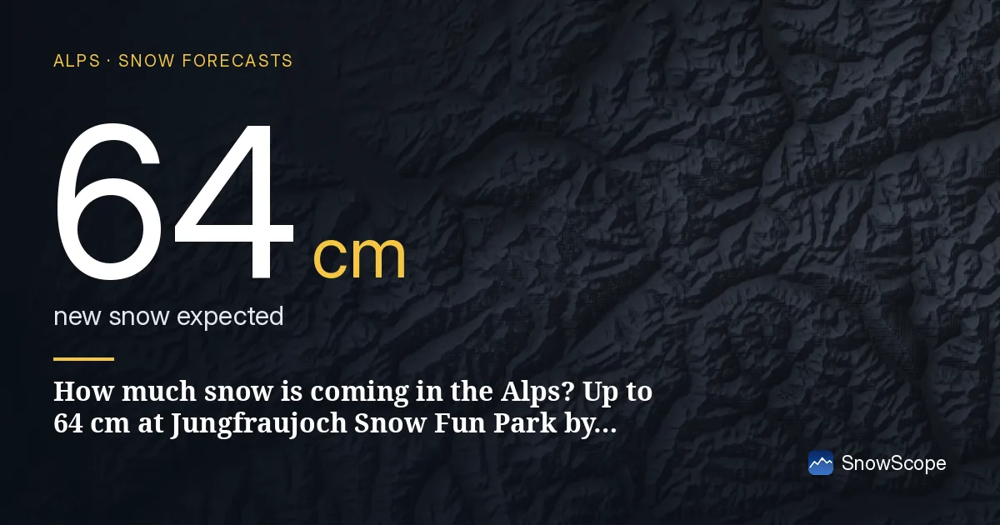
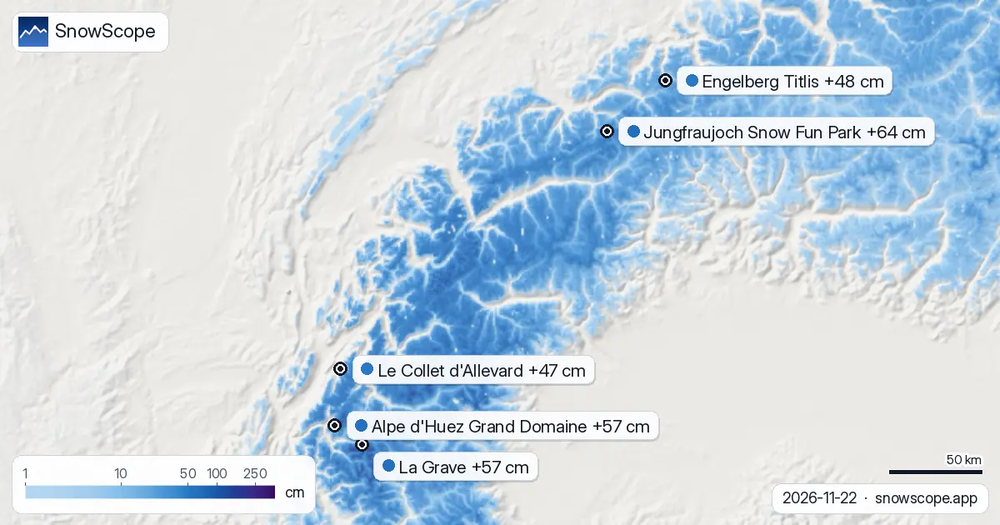

How much snow is coming in the Alps? Up to 64 cm at Jungfraujoch Snow Fun Park by 25 November
A broad snow system is moving across the Alps from Sunday 22 November through Wednesday 25 November, with the heaviest falls arriving on Monday and Tuesday. Jungfraujoch Snow Fun Park will collect 64 cm of new snow over these four days, while Alpe d'Huez Grand Domaine and La Grave will each gain around 57 cm—enough to fill the snowpack noticeably higher than recent weeks.
See the live snow forecast for Jungfraujoch Snow Fun Park in the SnowScope appSnow depth, powder alerts and the 3D map, free.
Where the snow sits today
Three resorts lead the region in depth: La Grave holds 171 cm on its upper slopes, Alpe d'Huez Grand Domaine has 125 cm, and Jungfraujoch Snow Fun Park sits at 63 cm. The spread reflects the mountains' height and the storms that have already arrived from Friday into Saturday.
Across the entire Alps, SnowScope shows snow covers 108,680 km² and has reached 1,104 of the 1,204 resorts. This marks a sharp jump from just two days earlier, when only 83,480 km² was snow-covered. The region is filling in fast.
| Resort | Snow depth | New snow, 72 h | Coming, next days | Top |
|---|---|---|---|---|
| Jungfraujoch Snow Fun Park | 63 cm | 89 cm | 64 cm | 3,461 m |
| Alpe d'Huez Grand Domaine | 125 cm | 123 cm | 57 cm | 3,306 m |
| La Grave | 171 cm | 127 cm | 57 cm | 3,543 m |
| Engelberg Titlis | 42 cm | 63 cm | 48 cm | 3,040 m |
| Le Collet d'Allevard | 54 cm | 89 cm | 47 cm | 2,084 m |

Sunday to Wednesday: when the snow falls
At Jungfraujoch Snow Fun Park, the breakdown by day tells the story. Sunday 22 November brings 34 cm—steady but not dramatic. Monday 23 November is the peak, with 44 cm arriving. Tuesday 24 November slows to just 1 cm, but Wednesday 25 November adds another 19 cm as a secondary pulse moves through.
The pattern holds across the high resorts. Alpe d'Huez Grand Domaine receives 17 cm on Monday, only 3 cm on Tuesday, then 37 cm on Wednesday. La Grave follows the same rhythm: 12 cm Monday, 4 cm Tuesday, 41 cm Wednesday. Plan your trip timing around these pulses.
How this season stacks up
At Jungfraujoch Snow Fun Park, the current snowpack at mid-height (3,450 m) stands at 49 cm. In a typical year, 22 November carries 81 cm at this elevation—so right now the season is running about 40% behind normal. That said, the depth ranks deeper than 7 of the past 46 winters on this date, so early-season snow is not absent.
Once these four days of snow finish, SnowScope forecasts the Alps will hold 135,600 km² of snow cover—a gain of 27,000 km² in just one week. The region is building reserves steadily.
Cold air and the snow line
The timing of cold air matters as much as the volume of precipitation. On Sunday 22 November, the freezing level at Jungfraujoch Snow Fun Park ranges from 2,590 m to 2,870 m—well below the resort's 3,439 m base. All precipitation falls and stays as snow.
Monday 23 November sees the freezing level rise to 2,520 m to 3,360 m. Still favourable at Jungfraujoch Snow Fun Park, but lower resorts like Alpe d'Huez Grand Domaine feel the pinch: its freezing level reaches 1,790 m to 2,230 m on 23 November, putting mid-mountain slopes near or above the wet-snow line. By Tuesday 24 November, the freezing level climbs higher across the board, so early-morning descents are safer than afternoon runs.
On Wednesday 25 November, the air cools again. The freezing level drops to 2,350 m to 2,500 m at La Grave and similar heights elsewhere, stabilising the new snow and reducing melt risk.
Depth by elevation at the high resorts
Jungfraujoch Snow Fun Park's three elevation bands—base (3,439 m), mid (3,450 m), and summit (3,461 m)—all show 50 cm on the ground today and forecast 70 cm in the next 7 days. The uniformity reflects the compact vertical range of this snow fun park.
Alpe d'Huez Grand Domaine spans much greater relief, from 1,124 m to 3,306 m. The base holds almost no snow (0 cm), mid-mountain has 43 cm, and the top carries 146 cm. The 7-day forecast adds 12 cm at the base, 82 cm at mid-mountain, and 114 cm at the summit. Skiers heading uphill will see a dramatic jump in coverage and stability.
What to watch and how forecasts shift
Forecasts this far ahead carry real uncertainty. The timing of Monday's peak is fairly solid, but Wednesday's secondary pulse could strengthen, weaken, or shift by a day. Check the map again on Tuesday 24 November—just before you decide when to travel.
The forecast adds meaningful volume: 64 cm at Jungfraujoch Snow Fun Park, 48 cm at Engelberg Titlis, and 47 cm at Le Collet d'Allevard build a wider, more stable base for the season. Early November's thin cover will thicken noticeably.
Tips for skiers
- Monday 23 November is the heaviest snow day at high elevation; Wednesday 25 November brings a second surge. Plan your timing around these two peaks rather than chasing a single day.
- Below 2,500 m, Tuesday and Wednesday mornings offer the best spring-like conditions after overnight freeze. Higher runs stay cold and powdery longer.
- New snow compacts quickly under sun and traffic. Start early on Monday and Wednesday to ski the fluffiest cover.
- Before you venture off-piste or mountaineering, consult the official avalanche bulletin for your area—new snow always carries risk.
- Use the SnowScope app to set a fresh-snow alert for Jungfraujoch Snow Fun Park and other resorts so you don't miss the best conditions when they arrive.
About these numbers
Resort snow depths are the deepest snow on the resort's upper slopes on the date shown; they are estimates for an area, not a measurement at one point. Forecasts can change. Always read the official avalanche bulletin before going off-piste.
Official avalanche bulletins: EAWS (Alps)
Cite this report
For research, teaching or the press: the numbers and charts are free to reuse under CC BY 4.0 with this citation.
SnowScope (2026), How much snow is coming in the Alps? Up to 64 cm at Jungfraujoch Snow Fun Park by 25 November, https://snowscope.app/blog/en/2026/11/alps-jungfraujoch-snow-fun-park-snow-forecast-22-november-2026.html, accessed 2026-11-22
SnowScope (Atlas Labs). (2026, November 22). How much snow is coming in the Alps? Up to 64 cm at Jungfraujoch Snow Fun Park by 25 November. SnowScope snow reports. https://snowscope.app/blog/en/2026/11/alps-jungfraujoch-snow-fun-park-snow-forecast-22-november-2026.html
BibTeX
@misc{snowscope2026alpsjungfraujochsnowfunp,
author = {{SnowScope (Atlas Labs)}},
title = {How much snow is coming in the Alps? Up to 64 cm at Jungfraujoch Snow Fun Park by 25 November},
year = {2026},
month = nov,
howpublished = {\url{https://snowscope.app/blog/en/2026/11/alps-jungfraujoch-snow-fun-park-snow-forecast-22-november-2026.html}},
note = {Published 2026-11-22 12:06 UTC; accessed 2026-11-22}
}· CC BY 4.0 · Methods, data and tools →
Jungfraujoch Snow Fun Park: snow and temperature by height, this winter vs last (tools) →
Follow Jungfraujoch Snow Fun Park
Free: a message when fresh snow is coming, and the forecast every morning.
More snow reports

Alpe d'Huez got 106 cm of fresh snow in 72 hours by 23 November. More powder coming, but watch for rain mid-week.

46 winters of snow history at Alpe d'Huez show peak depths of 52 cm at base, 184 cm mid-mountain, 440 cm at top. Data from 1980–2026.

What is true about La Grave, the off-piste mountain under La Meije: terrain, safety, snow by month and the trend, from 46 past winters.